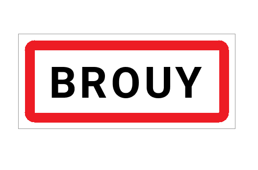

Désembouage à Brouy (91150)

Un chauffage plus performant et économe grâce au désembouage
Au fil du temps, les circuits de chauffage s’encrassent à cause de l’accumulation de boues, de calcaire et d’impuretés. Ces dépôts ralentissent la circulation de l’eau chaude, diminuent la performance du système et augmentent la consommation énergétique. À Brouy, notre entreprise met à votre disposition son expertise pour effectuer un désembouage complet et professionnel, garantissant un chauffage plus efficace, plus propre et plus durable.
Pourquoi le désembouage est-il indispensable ?
Les boues présentes dans un circuit de chauffage proviennent principalement de la corrosion des métaux et des dépôts calcaires. À mesure qu’elles s’accumulent, elles empêchent la chaleur de se diffuser correctement et détériorent progressivement les équipements.
Voici les signes qui doivent vous alerter :
- Des radiateurs qui chauffent mal ou restent froids sur certaines zones ;
- Des bruits inhabituels dans les canalisations ;
- Une chaudière qui consomme davantage sans produire plus de chaleur ;
- Une température inégale dans le logement ;
- Une montée en température plus lente qu’à l’origine.
Le désembouage permet de nettoyer intégralement le réseau de chauffage et d’éliminer ces impuretés.
Les bénéfices sont immédiats :
- Une meilleure diffusion de la chaleur ;
- Une réduction de la consommation énergétique (jusqu’à 20 %) ;
- Une prévention efficace des pannes ;
- Une durée de vie prolongée du système de chauffage.
En général, un désembouage est recommandé tous les 5 à 7 ans, selon la qualité de l’eau et l’état de l’installation.
Une entreprise locale à votre service à Brouy
Depuis plus de dix ans, SPC Santos Plomberie Chauffage intervient dans toute l’Essonne pour entretenir, réparer et optimiser les systèmes de chauffage. Basée à proximité, notre équipe se déplace rapidement à Brouy, ainsi que dans les communes voisines comme Étampes, Puiselet-le-Marais, Champmotteux ou Valpuiseaux.
Notre priorité : garantir un chauffage performant, fiable et durable pour un confort optimal tout au long de l’année.
Nos atouts :
- Une expertise reconnue dans le domaine du chauffage et de la plomberie ;
- Des techniciens qualifiés, formés aux dernières techniques de désembouage ;
- Des produits écologiques, sans danger pour vos installations ;
- Des interventions rapides et soignées, adaptées à vos besoins.
Nos prestations de désembouage à Brouy
Nous intervenons sur tous les systèmes de chauffage à eau chaude, qu’ils soient individuels ou collectifs :
- Radiateurs à eau chaude (fonte, acier, aluminium) ;
- Planchers chauffants hydrauliques ;
- Chaudières à gaz, fioul ou à condensation ;
- Pompes à chaleur air/eau et systèmes hybrides.
1. Diagnostic complet de votre installation
Chaque intervention débute par un bilan précis de votre réseau : mesure du débit, de la pression, de la température et de la qualité de l’eau. Ce diagnostic nous permet de définir la méthode la plus adaptée.
2. Nettoyage en profondeur du circuit
Selon l’état de votre installation, deux techniques peuvent être utilisées :
- Le désembouage mécanique, à l’aide d’une machine à pression contrôlée pour évacuer les boues et dépôts ;
- Le désembouage chimique doux, utilisant des produits non corrosifs pour dissoudre les impuretés sans endommager les canalisations.
3. Traitement préventif
À la fin du nettoyage, nous injectons un inhibiteur de corrosion pour empêcher la reformation de boues et protéger durablement le système.
4. Vérification et remise en service
Nous testons ensuite la circulation de l’eau et la montée en température pour nous assurer que votre chauffage fonctionne à pleine efficacité.
Pour qui intervenons-nous à Brouy ?
Nos prestations s’adressent à tous types de clients :
- Les particuliers, pour leurs maisons ou appartements ;
- Les syndics et copropriétés, pour les installations collectives ;
- Les entreprises, pour leurs locaux professionnels ;
- Les collectivités locales, pour les bâtiments publics et établissements municipaux.
Chaque intervention est personnalisée selon la configuration et les besoins de votre installation.
Des tarifs transparents et compétitifs
Chez SPC Désembouage Brouy, nous privilégions la transparence et la qualité. Avant chaque intervention, nous réalisons un devis gratuit et détaillé, précisant la méthode employée, les produits utilisés et le coût total.
Nos tarifs sont étudiés pour offrir le meilleur rapport qualité-prix, sans frais cachés. Le désembouage est un investissement rentable, puisqu’il réduit votre facture énergétique et prolonge la durée de vie de votre système de chauffage.
SPC Santos Plomberie Chauffage : une référence en Essonne
Créée en 2010, SPC Santos Plomberie Chauffage est une entreprise reconnue pour son sérieux et son savoir-faire dans le domaine du chauffage et de la plomberie. Nous intervenons également dans les départements limitrophes — Seine-et-Marne, Val-de-Marne et Hauts-de-Seine — pour tous types de prestations thermiques.
Nos techniciens utilisent du matériel moderne conforme aux normes européennes, garantissant un nettoyage complet, sûr et durable. Notre philosophie : allier technologie, rigueur et proximité pour vous offrir le meilleur service possible.
Nos engagements qualité
En faisant appel à SPC Désembouage Brouy, vous bénéficiez de :
- Un diagnostic gratuit et personnalisé avant toute intervention ;
- Des produits écologiques et respectueux de votre installation ;
- Une intervention rapide et soignée ;
- Une garantie de satisfaction sur toutes nos prestations.
Nous mettons un point d’honneur à restaurer les performances de votre système tout en préservant sa durabilité.
Contactez-nous dès aujourd’hui
Vos radiateurs chauffent mal ? Votre chaudière consomme plus que d’habitude ? Contactez dès maintenant SPC Désembouage Brouy pour un devis gratuit et une intervention rapide à votre domicile.
📞 Téléphone : 01 69 25 77 54
📍 Adresse : 19 rue Pierre Brossolette, 91700 Sainte Geneviève des Bois
📧 Email : contact@desembouage-91.fr
SPC Désembouage Brouy, votre partenaire local pour un chauffage plus propre, plus performant et plus économique.
Contactez-nous au 01 69 25 77 54